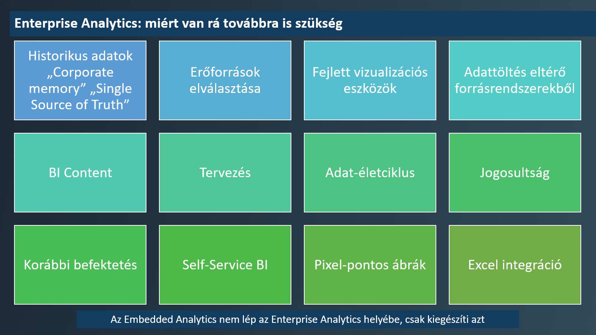
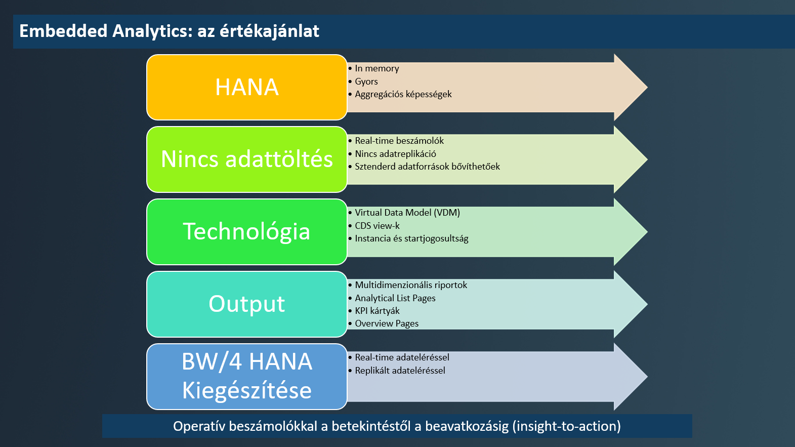
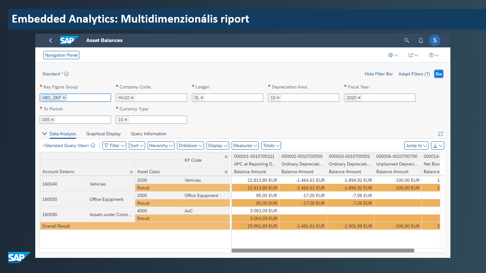
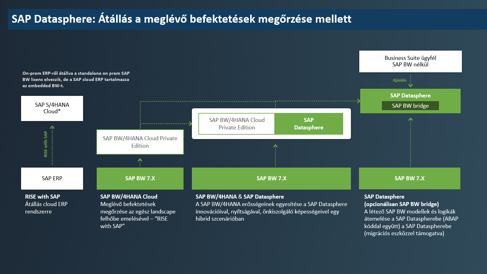
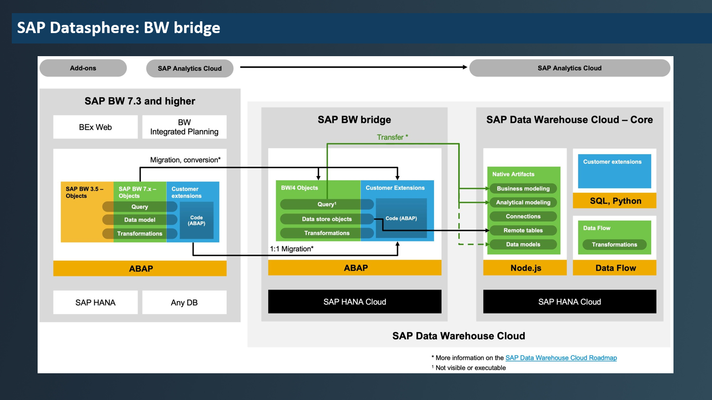

Embedded analytics (EA) vs. SAP BW vs. SAP Datasphere
Posted on 2023-03-28 in Embedded Analytics
Table of Contents
The presentation was held at the RISE with SAP conference, New York Palace, Budapest, 2023-03-28.
The presentation slides are available here (only in Hungarian).
1. Introduction
SAP does not make it easy for their customers (and partners alike) to follow their solution portfolio as product names often change. Even similarly named products may turn out to have extensively different capabilities.
My aim with the presentation was to shed light on the differences and try to differentiate among the products by their purpose and capabilities. The topic focuses on the backend side, so tools used primarily for visualization like SAP Analtics Cloud (SAC), Microsoft PowerBI, Tableau are not discussed here.
2. Embedded Analytics vs Enterprise Analytics
Embedded Analytics corresponds to SAP Business Warehouse in today's world for most clients. This is the trusted, reliable system that ECC users install on prem and manage as their data warehouse.
Enterprise Analytics is the umbrella term that is used to characterize the analytical capabilities of SAP S/4HANA. It entails KPIs, multidimensional reports, ALV with Integrated Data Access (IDA), overview pages, analytical reports, and anything that can be brought alive by relying on the real-time nature of the underlying SAP HANA database.
3. Enterprise Analytics - not to be discarded
One may think that if SAP S/4HANA solves runtime problems by providing real time data then SAP BW is no longer needed.
Nothing could stand further from reality. To make a simple and clear distinction imagine having years' and years' of data all piling up in an SAP S/4HANA system taking up precious memory, without archiving. Not that realistic, is it?
Keeping the corporate memory and the single source of truth in a separately managed system alleviates the load on the production supporting ECC system, while retaining it for long term historical reports. Not to mention all the connections that are needed for source systems for data transfers into the corporate data warehouse, which noone wants to see in their production system.
There other 'minor' issues like: planning, data governance, data lifecycle management, self-service BI, Excel integration that are not solved in an S/4HANA system - because they do not belong there.

As a final hit in the illusion of using SAP S/4HANA instead of a data warehouse the installation of BI Content in such a system is not supported - 2289424.
4. Embedded Analytics
4.1. Sidenote: Embedded BW
An encountered term is Embedded BW when it comes to SAP S/4HANA. What is it? It is a BW on HANA 7.5 with full functionality included with SAP S/4HANA.
But it is not there to fulfill the purposes of a full blown data warehouse, it is just a sidecar that exists to support designated SAP S/4HANA processes.
BI Content is not supported, BPC functionality requires separate licence.
As such it is not something to be used for data warehousing.
4.2. Value proposition
The core value of EA is bringing real-time, operational reporting to life without data replication allowing a blazing fast insight-to-action approach.

As for backend technology this means Core Data Services (CDS) views. CDS views should be imagined as stacked SELECT statements on each other. If this is designed carefully this can bring some really nice and reusable data models with itself - which can be reused by SAP BW/4HANA as well to integrate with other models. So developments in EA are not in vain even if it turns out to be needed on the BW side as well.
As for output technology the most likely choice is Fiori.
Standard Fiori applications often rely on CDS views even without the end users or consultants noticing. Fiori Overview Pages providing 360° views of a business subject are a prominent example of SAP S/4HANA capabilities.
Tiles with KPIs populate all users' Fiori Launchpad serving not only as a single point of entry into SAP S/4HANA but also as a mini dashboard.
Business Explorer (BEx) like reports can be achieved in the form of multidimensional reports supporting capabilities of the very same OLAP engine that is found in SAP BW.

SAP GUI users can leverage ALV on IDA, where not the full dataset is transferred to the application server for display, but only just the relevant proportion of it that fits on the screen, making data display even faster.
All the above are available for custom developments as well, with SAP supporting data model building even via power user tools. As per my personal opinion power user tools do not solve modeling and backlog refinement difficulties but pose as burdens with their limitations compared to modeling with Eclipse.
5. Enterprise Analytics in the cloud: SAP Datasphere
5.1. Value proposition
Data Warehouse Cloud. That is the previous name of the product. There is no more concise way to summarise what it is than that name. This is SAP's public cloud data warehouse solution, which is the strategically highlighted solution by SAP when it comes to data warehousing.
The question arises why one should consider using this if BW/4HANA is a trusted solution that is supported till 2040. The answer lies in the capabilities. A cloud product can meet requirements that an on prem data warehouse cannot. It allows connecting to more datasources and serving more data consumers than an on prem solution - and also easier. If cloud native SAP products are used then a connection between cloud products is easier to establish than connecting the on prem world to the cloud.
Semantic modeling serves as a concept to bring self-service BI closer to the end users and closer to become a reality. If data architects are tasked to only take care of the technical aspects (data layer - like modeling up to a composite provider) but from then on the technical world is abstracted away by mapping to business terms (business layer) then that will make the end users feel at home with the data provided to them.
Open analytical tools like Python (pandas, sqlalchemy, etc.) and SQL (HANA SQL and HANA SQLScript) are welcome citizens when it comes to modeling and data analysis. It is a nice addition to the toolset as it allows more people to gain information from data as opposed to the closed ecosystem of ABAP.
Spaces as a term can be recognised as what was former known as info areas. In my experience info areas are not widely used by customers for authorization restrictions, clients like to narrow down authorization to a query level. However in the cloud spaces are much more important as they allow admins to restrict resource consumption by spaces. They also serve a playground for restricting as to what is made available to an end user when it comes to self-service BI.
SAP Datasphere also enables accessing third-party data via a built in data market. This means that 3rd party data (be it weather, stock data, FX rates, commodity prices, etc.) will be made available via a subscription without further interfaces. What is more the clients can choose to provide such data themselves for others.
5.2. How to RISE into the cloud

The advantage of using a cloud solution is that a demo is not more further than a few clicks. No hardware procurement, no demo licence agreement negotiation, no SAP BASIS installation. With just a registration and the press of a button one may start experimenting with SAP Datasphere in a few minutes.
If the first feedback is positive one may experiment with a pilot project in SAP Datasphere. Then one will have first hand experience about productive use, pricing, connection establishments, modeling, administration - while not risking more than the given project, while all existing BW models functioning untouched.
Or one may take the hybrid approach and first move a selected BW model into the cloud via a migration tool that is capable of moving just the model (shell conversion) or the model and the data as well (remote conversion). This migration is detailed in a comprehensive playbook.
So a SAP BW and Datasphere may coexist as long as desired and models may be transferred at the clients' own pace.
5.3. BW Bridge
So how will the BW world meet Datasphere? By using SAP Datasphere's BW Bridge. It is a feature of Datasphere that allows bringing BW models into a separate, dedicated space in SAP Datasphere. It won't cover everything, as Web Templates, consolidation and planning features are not supported - those are to be covered by SAP Analtics Cloud. But it will support transformations, data strore objects along with custom ABAP coding. What is more this is not just for migration, it is also available for modeling there on BW terms, if desired.

But how will the end result of the BW Bridge space made available for SAP Datasphere? This is quite simple, by selecting the tables behind the models' end results for projection and sharing with other spaces. So one may select whichever table of an aDSO or infoobject is desired and it can be used for further modeling via Datasphere.
6. Conclusion
SAP provides its customers with a wide toolset when it comes to leveraging data. If one uses an SAP S/4HANA system then the first solution to check is the toolbox of Embedded Analytics. If reports are needed as a daily driver that is based on data available in the system, then this is the go to solution.
If data is to be retained longer, if resource separation is desired, if end users of ECC and analytics data form disjoint sets, if there are multiple data sources, then one should choose a data warehouse solution.
Whether on prem BW4/HANA or BW4/HANA private cloud edition, or SAP Datasphere is the way to go, depends on the individual requirements. As a rule of thumb BW4/HANA supports the older world better (addons), and due to its maturity might be a better choice for the time being. But for consuming and providing cloud data sources, future proofing, SAP Datasphere is the strategic solution. Since the two worlds can coexist together, one can enjoy the benefits of both without sacrificing advantages of the other.